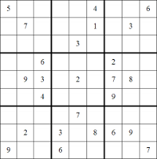
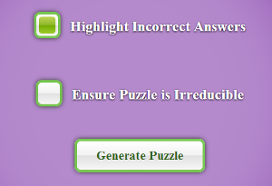
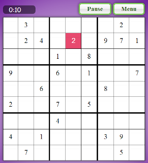
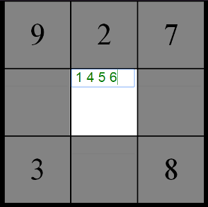
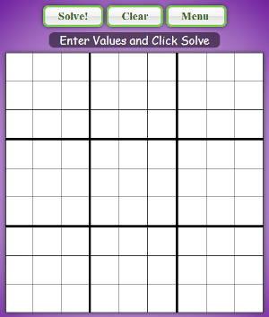
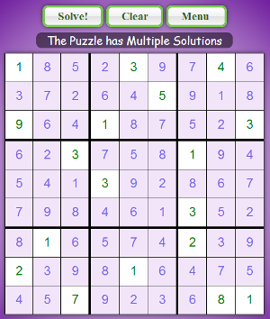
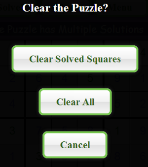
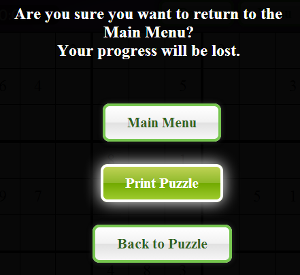

Paused
ResumeYou Completed the Puzzle In:
Return to MenuClear the Puzzle?
Please Wait a Moment!
I'm making life difficult for you!
Sudoku is a logic puzzle game consisting of nine symbols (the number 1-9) and 81 squares in a 9x9 grid. The objective is to fill each square with a symbol such that every row, column, and 3x3 region contains exactly one of each symbol.
Sudoku puzzles come with several of the grid squares pre-filled with symbols that must be used to deduce the remaining squares. Good Sudoku puzzles have only one possible solution. If a Sudoku puzzle is created where removing any of the pre-filled squares would result in the puzzle having multiple solutions, it is said to be "irreducible" or a "minimal puzzle".
There are various resources online that give tips on how to complete a Sudoku puzzle. This section will only provide information on using this Sudoku program.
From the Main Menu click Play a Random Sudoku. You will be taken to the Puzzle Options screen where you can choose how you wish to play Sudoku.
If selected, incorrect answers will be marked with a different colour as you enter them.
If selected, the generated puzzle will be guaranteed to have the property that removing any of the pre-filled numbers would result in the puzzle having multiple solutions.
Click Generate Puzzle to be taken to the Play screen.
The Play screen is shown below.
A timer (show in the top left) will begin as soon as the puzzle is generated. You can pause the timer at any time by clicking Pause. Clicking Menu will also pause the timer while the menu is open.
To enter values into a square, click in the centre and type one of the numbers 1-9. Invalid values will be rejected. If Show Incorrect Answers was selected, and your answer was not correct, the squares' colour will change indicating a wrong answer.
To make a note in a square, click in the top region of the square and type your note.
When the puzzle is finished correctly, a pop-up will appear showing a congratulatory message and the completion time.
The Puzzle Solver allows you to find solutions to arbitrary Sudoku Puzzles. It is accessed from the Main Menu by clicking Puzzle Solver .
Adding numbers to the empty Sudoku grid is easy! Simply click in the desired square and type one of the values from 1-9. Invalid values will be rejected.
To find a solution to the puzzle, click the Solve! button. The information box will inform you if there are 0, 1, or more solutions to the puzzle. If a solution exists, it will be placed on the board. Numbers that have been added by the solver will have a different background and font colour from those entered by the user.
The puzzle can still be altered after it has been solved! Simply click in the desired square and change it's value.
Numbers can be removed from the Sudoku grid quickly by clicking the Clear button. Doing so will open the Clear pop-up.
Clicking this button will remove all of the numbers that were filled in by the solver.
Clicking this button will remove all numbers from the Sudoku grid.
Clicking this button will close the Clear pop-up without removing any numbers from the Sudoku grid.
This Sudoku program can be used to create your own print-out Sudoku puzzles.
The built in puzzle generator can be used to create your own puzzles. Refer to the Setting up a Puzzle section of How To Play for more information.
The Puzzle Solver can be used to create your own puzzles. Refer to Using the Puzzle Solver for more information.
For best results:
Use the solver to check if the puzzle has a unique solution.
Clear Solved Squares before printing to leave behind only the designated squares.
Most Sudoku puzzles have pre-filled numbers placed symmetrically on the grid, providing an aesthetically pleasing puzzle. Be creative with patterns to create a nice looking Sudoku!
A puzzle can be printed from either the Play screen or the Puzzle Solver screen. To do so, click the Menu button followed by the Print Puzzle button.
Follow your computers print-wizard to print the puzzle.